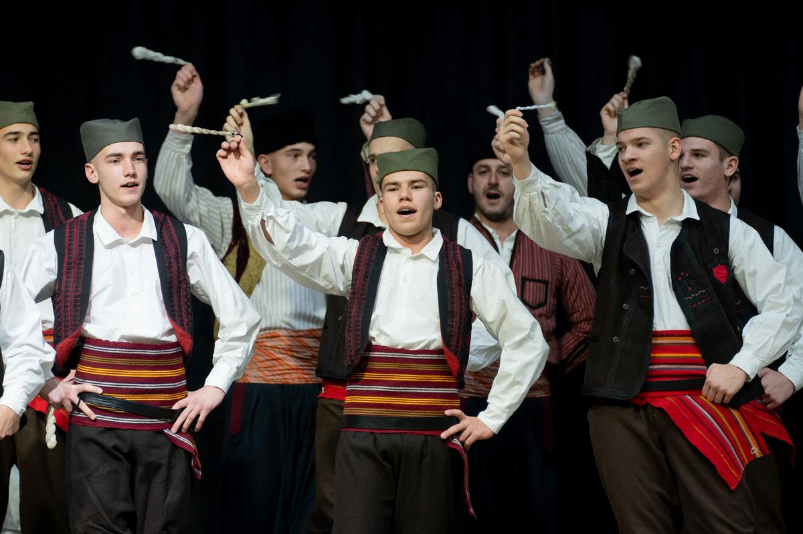

Sekcije
Folklor, orkestar, hor, drama, pevačke grupe, muzička radionica i moderni balet. Svaka sekcija ima svoju priču i svoje ljude.
Folklorna sekcija
Srce društva i sinonim za „Abrašević“: prvi ansambl, ansambl veterana, pet dečijih ansambala i dve rekreativne grupe.
- Osnovana 1946.
- Oko 400 članova
- Preko 50 koreografija
- Umetnički rukovodilac prvog ansambla od 2019: Dejan Prvanović
- Ansambl veterana (osnovan 1998): Nataša Arsenijević
Uzrast i termine proba potvrđuje društvo.
Prijavi se
Iz istorije sekcije
- 1946–1954. nastupa uglavnom u Kraljevu i okolini. Pravi uslovi za rad stižu tek preseljenjem u Dom društvenih organizacija.
- 1964. Zelena Gora u Poljskoj donosi popularnost, članstvo se umnožava i formiraju se još tri dečija ansambla. Repertoar su tada pesme i igre iz cele SFRJ.
- Osamdesetih broj članova raste i sekcija postaje baza oko koje se formira celokupno umetničko stvaralaštvo.
- Do 1998. na čelu ansambla je koreograf Slavoljub Panović, potom Zvezdan Đurić, koga je nasledila Nataša Arsenijević.
- Koreografije: „Igre iz Studenice“, „Svadbeni običaji iz Grdelice“, „Igre iz Prizrena“, „Vranjsko polje“, „Bosilegradsko krajište“, „Igre iz okoline Beograda“, „Igre iz okoline Niša“ i mnoge druge.
- Nastupali su u Bugarskoj, Makedoniji, Švajcarskoj, Češkoj, Švedskoj, Australiji, Grčkoj, Kini, Brazilu, SAD, Španiji, Turskoj, Engleskoj i drugde.
Narodni orkestar
Prati sve folklorne grupe i vokalne solisti, a po potrebi hor i pevačke grupe. Preko 30 članova.
- Preko 30 članova
- Muzička sekcija postoji od 1926.
- Koncert „Putovanje“ 2015.
- Na čelu orkestra: Veljko Miljković
- Korepetitor i prva harmonika (od 1993): Dejan Vuković
Uzrast i termine proba potvrđuje društvo.
Prijavi seIz istorije sekcije
- Muzička sekcija se može, uz dramsku, smatrati osnivačem društva: 1926. su uz hor postojali i tamburaši.
- 1971. formiraju se dva orkestra, narodni i zabavni, a 1973. nabavlja se veći broj instrumenata.
- Iz sekcije su potekli mnogi izvođači srpske narodne muzike, među njima Vesna Zmijanac, Dejana Đekić, Milan Simić i harmonikaš Miroljub Vrndić.
- Od 2001. na čelu je Rade Kuburović, koji je uveo najviše novina, među njima dečiji orkestar od učenika Muzičke škole „Stevan Mokranjac“. Većina njih danas svira u narodnom orkestru.
- 2015. narodni orkestar održao je svoj celovečernji koncert „Putovanje“.
Muzička radionica
Za one koji žele da nauče da sviraju: sa polaznicima rade članovi narodnog orkestra.
- Osnovana krajem 2017.
- Devet instrumenata
- Praktično i teorijsko znanje
- Prijave i termini časova: obratite se društvu
Uzrast i termine proba potvrđuje društvo.
Prijavi seIz istorije sekcije
- Polaznici uče harmoniku, gitaru, kontrabas, trubu, frulu, klarinet, saksofon, violinu i kaval.
- Sa polaznicima rade članovi narodnog orkestra „Abraševića“.
- Članovi radionice imaju i samostalne nastupe, a neki su postali članovi narodnog orkestra.
Horska sekcija
Dečiji hor sa oko sedamdeset numera i stariji mešoviti hor koji je svoj prvi nastup imao na „Letu kod Abraševića“.
- Dečiji hor od 2008.
- Oko 70 numera (dečiji hor)
- Mešoviti hor od 2016.
- Dečiji hor vodi: Dejana Živković Kuburović
Uzrast i termine proba potvrđuje društvo.
Prijavi seIz istorije sekcije
- Horska sekcija datira iz predratnog perioda, a veći uspesi beleže se od 1946. do 1970. na akademijama i takmičenjima širom SFRJ.
- Sekcija prekida rad od 1970. do 1974. Kasnije se više puta formiraju pevačke grupe, uglavnom od igrača sa pevačkim darom.
- 2008. rad se obnavlja formiranjem dečijeg hora, koji brzo postaje popularan.
- 2016. ponovo se formira stariji mešoviti hor, sa dvadesetak numera i inostranim gostovanjima.
Dramska sekcija „PROZORIŠTE“
Jedna od sekcija koje su osnovale Umetničku grupu 1926. Obnovljena 2009, danas okuplja oko 30 članova u tri grupe.
- Osnovana 1926.
- Obnovljena 2009.
- Oko 30 članova u tri grupe
- Rukovodilac od 2020: Ana Jerotijević
- Ranije su sekciju vodili Biljana Konstantinović, Dragan Pešić i Stefan Milikić
Uzrast i termine proba potvrđuje društvo.
Prijavi seIz istorije sekcije
- U početku radi u prostorijama hotela „Pariz“, gde se izvode i predstave, i uspešno gostuje u okolnim gradovima.
- 1949. se osamostaljuje i formira se Narodno pozorište „Kraljevački oktobar“, koje i danas postoji.
- Septembra 2009. sekcija ponovo počinje rad pod imenom „PROZORIŠTE“, uz nagrade na pozorišnim festivalima u zemlji i inostranstvu.
- 2017. izvedena je prva predstava za mlade u novijoj istoriji „Abraševića“. Dečija drama je na festivalu u Bugarskoj osvojila nagradu za najbolje izvedenu predstavu.
Pevačke grupe
Muška i ženska pevačka grupa i etno grupa sa velikim brojem pesama na repertoaru.
- Od 2015.
- Tri grupe
- Koncert u Kolarčevoj zadužbini
- Rukovodioci, etnomuzikolozi: Borisav Miljković, Sofija Gračanac i Milica Gračanac
Uzrast i termine proba potvrđuje društvo.
Prijavi seIz istorije sekcije
- Na inicijativu Borisava Miljkovića 2015. počinju sa radom muška i ženska pevačka grupa, a danas radi i etno grupa (mlađa ženska pevačka grupa).
- Grupe su imale zapažene nastupe širom Srbije na tradicionalnim saborima narodnog stvaralaštva i nekoliko celovečernjih koncerata, među njima i u Kolarčevoj zadužbini.
- Sa takmičenja su se uvek vraćale sa vrednim nagradama.
Moderni balet
Sekcija osnovana 1985. čija je plesna grupa gostovala i na festivalu u Rumuniji.
- Osnovana 1985.
Uzrast i termine proba potvrđuje društvo.
Prijavi se
Iz istorije sekcije
- Sekcija modernog baleta osnovana je 1985. i u kasnijem periodu beležila je značajne rezultate.
- Plesna grupa gostovala je na festivalu u Klužu u Rumuniji.
- Podatke o rukovodiocu i probama potvrđujemo.